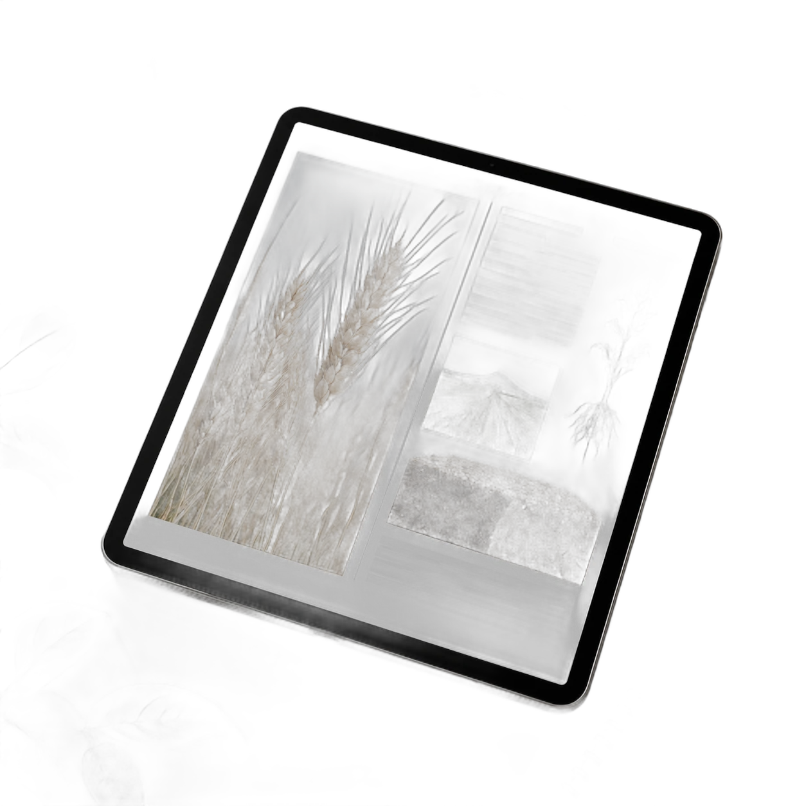

Ebooks agrarios listos para entrar al aula
Fichas de cultivo, protocolos de campo y planificaciones armadas por docentes de escuelas agrotécnicas. En PDF, con descarga inmediata apenas se acredita la compra.

Destacados de Cuaderno Agrario
Seis áreas de la enseñanza agraria
Material armado por docentes, para docentes
Cuaderno Agrario nació en la sala de profesores de una escuela agrotécnica: fichas fotocopiadas, guías a mano y protocolos de campo que circulaban entre docentes de un aula a otra.
Hoy ese archivo se ordenó en ebooks: contenido curado por nivel, con actividades, mapas y evaluaciones listas para bajar y proyectar el mismo día de clase.
-
01
Fichas de cultivo
Mapas, estaciones del año y ciclos de cada cultivo, listos para proyectar.
-
02
Protocolos de campo
Pasos de laboratorio y de campo, con planillas para completar en la salida.
-
03
Planificación docente
Objetivos, actividades y evaluación, alineados al programa del ciclo.
Planificación docente
Protocolos de campo
Fichas de cultivo
Todos los ebooks de Cuaderno Agrario
No encontramos ebooks con esos filtros
Probá con otra palabra o limpiá los filtros para ver el catálogo completo.
Sumá el próximo ebook a tu planificación
Elegí por tema o por nivel y tenelo en tu PDF antes de la próxima clase.